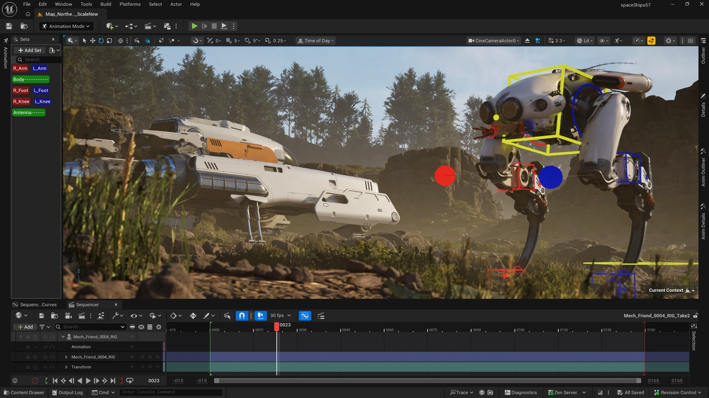

Unreal Engine (made by Epic Games), is most known for it's high-fidelity Graphics above all else. Each update they push the boundaries on how advanced their graphics can go, and have been a very consistent platform for high end games. Its blueprinting system for Scripting is also a very nice feature for developers who are less coding oriented (It's a node-based format).
Unreal is best designed for high-end games, which can be a bit overkill for the more simplistic/simple games. It also will naturally require better hardware if you want to develop games with the best of the best graphics, but that comes with the territory. Compared to other platforms like Unity and Godot it also has a steeper learning curve for learning the layout and feel for the game engine, especially the blueprints system, which although a worthwhile feature, takes a little getting used to.